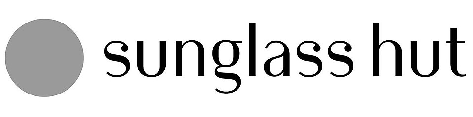

홈 > 브랜드 매거진 > Dollarama
Dollarama
Dollarama는 캐나다의 리테일·커머스 브랜드로, 상품 큐레이션, 가격 체계, 매장·온라인 유통, 구매 편의성이 브랜드 인식을 좌우하는 영역입니다.
산업 분야 리테일·커머스 · 공개 등급 자료 기반 · 브랜드 평가 4.1 ★

한눈에 보는 브랜드
Dollarama는 캐나다 기반의 리테일·커머스 브랜드입니다. 상품 큐레이션, 가격 체계, 매장·온라인 유통, 구매 편의성이 브랜드 인식을 좌우하는 영역으로 분류되며, 브랜드명과 업종, 운영 국가, 공개 로고 여부를 함께 보며 사전 항목의 기본 맥락을 확인할 수 있습니다.
브랜드 관점
Dollarama 항목은 단순한 이름 목록이 아니라 리테일·커머스 시장 안에서 어떤 역할을 하는지 읽기 위한 기준점입니다. 제품·서비스 범위, 유통 방식, 시각 아이덴티티, 시장 포지션을 함께 비교하면 같은 산업의 다른 브랜드와 차이가 선명해집니다.
브랜드 아이덴티티
Dollarama의 아이덴티티는 브랜드명, 로고 사용 여부, 업종 언어, 국가적 배경을 중심으로 정리됩니다. 대표 로고 자산이 연결되어 있어 시각 식별자를 함께 검토할 수 있습니다.
제품과 서비스
Dollarama의 제품과 서비스는 리테일·커머스 범주에서 해석됩니다. 이 섹션은 상품군, 서비스 방식, 판매 채널, 사용 장면을 분리해 추적하기 위한 기본 설명이며, 추가 자료가 확보되면 대표 제품과 가격대, 시장별 차이까지 확장할 수 있습니다.
현재 상태
타임라인
정리된 연도형 이벤트가 없습니다.
BI/CI 변천사
함께 읽을 브랜드
Archambault는 캐나다의 리테일·커머스 브랜드로, 상품 큐레이션, 가격 체계, 매장·온라인 유통, 구매 편의성이 브랜드 인식을 좌우하는 영역입니다.
Relay는 캐나다의 리테일·커머스 브랜드로, 상품 큐레이션, 가격 체계, 매장·온라인 유통, 구매 편의성이 브랜드 인식을 좌우하는 영역입니다.
Rona는 캐나다의 리테일·커머스 브랜드로, 상품 큐레이션, 가격 체계, 매장·온라인 유통, 구매 편의성이 브랜드 인식을 좌우하는 영역입니다.

리테일·커머스 · 자료 기반Sunglass HutSunglass Hut는 캐나다의 리테일·커머스 브랜드로, 상품 큐레이션, 가격 체계, 매장·온라인 유통, 구매 편의성이 브랜드 인식을 좌우하는 영역입니다.
 리테일·커머스 · 자료 기반립톤
리테일·커머스 · 자료 기반립톤립톤는 리테일·커머스 브랜드로, 상품 큐레이션, 가격 체계, 매장·온라인 유통, 구매 편의성이 브랜드 인식을 좌우하는 영역입니다.
 리테일·커머스 · 자료 기반스토케
리테일·커머스 · 자료 기반스토케스토케는 노르웨이의 리테일·커머스 브랜드로, 상품 큐레이션, 가격 체계, 매장·온라인 유통, 구매 편의성이 브랜드 인식을 좌우하는 영역입니다.
 리테일·커머스 · 자료 기반양키캔들
리테일·커머스 · 자료 기반양키캔들양키캔들는 미국의 리테일·커머스 브랜드로, 상품 큐레이션, 가격 체계, 매장·온라인 유통, 구매 편의성이 브랜드 인식을 좌우하는 영역입니다.
 리테일·커머스 · 자료 기반이마트
리테일·커머스 · 자료 기반이마트이마트는 대한민국의 리테일·커머스 브랜드로, 상품 큐레이션, 가격 체계, 매장·온라인 유통, 구매 편의성이 브랜드 인식을 좌우하는 영역입니다.